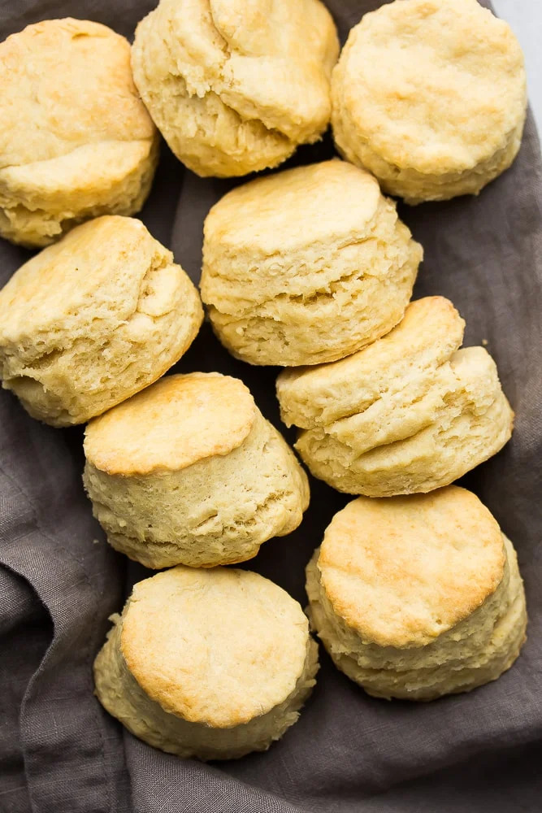

Vegan Buttermilk Biscuits

Description
Tender, flaky, buttery biscuits that bake nice and tall. Delicious served with
jam and vegan butter.
They also pair extremely nicely with vegan coleslaw, and could even be made with
a BBQ jackfruit or a breakfast sandwhich. Biscuits are ready within just 30 minutes.
This recipe makes 12 biscuits.
Ingredients
Vegan Buttermilk
- 1 Cup unsweetened soy milk
- 1 Tbs apple cider vinegar
The Rest
- 2 1/2 Cups all purpose flour
- 2 Tbs baking powder
- 2 tsp granulated sugar
- 1 tsp salt
- 1/2 cup (8 Tbs) cold vegan butter
Steps
- Preheat the oven to 425 degrees F and line a baking sheet with parchment paper
(or lightly spray with oil). Measure 1/2 Cup (8Tbs) vegan butter, cut into small
pieces and place in the freezer for five minutes. You want the Butter
to be very cold for tall, flaky biscuits.
- In a glass measuring cup, combine the soy milk and apple cider vinegar. Set
aside to curdle. This is your vegan buttermilk.
- Add the flour, baking powder, sugar, and salt to a large mixing bowl or food
processor. Whisk or pulse to combine. Now add the vegan butter pieces to the dry
and either cut into the dry ingredients using a pastry cutter or pulse several times
in the processor until coarse crumbs form. If you used a food processor, dump the
mixture into a large bowl.
- Pour the vegan buttermilk into the bowl with the rest of the ingredients, saving
a little bit for brushing the tops (about 2 Tbs). Gently stir until almost combined,
but do not over mix. It will not be a clean ball of dough at this point, and it will
be quite moist and sticky.
- Scoop the dough onto a lightly floured surface and gently work it together
with your hands, shaping it into a rectangle. Flour your hands to prevent sticking,
and sprinkle a little flour on the dough if it's sticky. Just don't add too much,
otherwise the biscuits will be dry.
- Gently flatten the dough into a rectangle, the fold one side into the center, then
the other side. Turn the dough a half turn, and flatten again into a rectangle shape.
Repeat the process two more times. This is what makes the wonderful layers.
- On the last folding, gently flatten the dough until it's about 1 inch thick.
Cut into circles using a biscuit cutter, and do not twist the cutters. Try to get as many
biscuits the first time. Re roll any scraps until you have 10-12 biscuits.
- Arrange them so they are touching on the pan, this helps them bake up tall. Brush the
tops with the remaining buttermilk and bake for 15-20 minutes, or until golden brown
on top and tall. Serve warm with a dab of vegan butter and jam.
- Cover any leftover biscuits and keep at room temperature for 3-4 days, or a bit longer
in the refrigerator. They freeze well, too.
Notes
- You can substitute almold milk, coconut milk, cashew milk, or possibly even oat milk for
the soy milk if desired. Just make sure the milk is unsweetened and unflavored.
- Earth Balance sticks work well for the vegan butter, but other brands will work just
as well (Such as Melt or Miyokos).